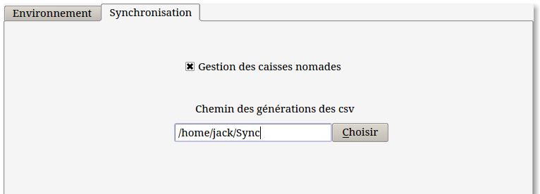
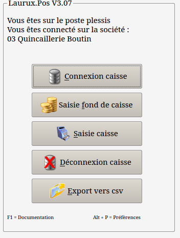
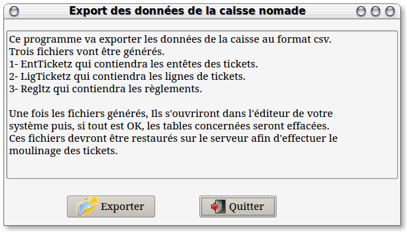
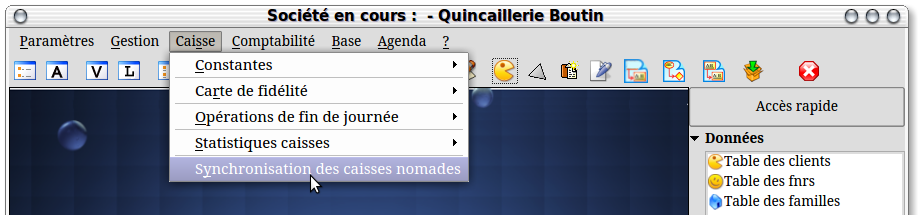
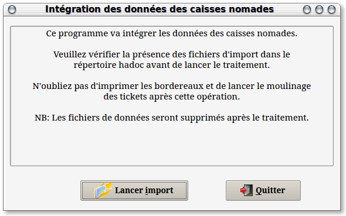

~ Laurux.Pos ~

~ Laurux.Pos ~ |
|
|
|
Généralités sur les synchronisation des caisses
nomades.
Laurux.pos répond d'une façon simple à la
synchronisation des caisses nomades lorsque les connexions réseaux ne
sont pas possibles.
Initialisation coté caisse.
Aller dans les préférences de la caisse (Alt
+ P) sur le menu général puis activer le bouton de gestion des caisses
nomades et renseigner le chemin d'export des fichiers.

Dés lors un nouveau bouton apparaitra dans le menu général de Laurux.pos.

Fonctionnement coté caisse.
Avant de quitter l'entreprise il faudra faire une
sauvegarde de la base du serveur qu'on restaurera ensuite sur la
caisse. On fait cela afin d'avoir sur la caisse les données à jour
(articles, prix, clients etc...)
Ensuite on travaillera normalement sur la caisse qui devra fonctionner avec la base locale qui aura été restaurée avant le départ.
En fin de travail on imprimera le ticket Z et on lancera l'export.

Dès lors une nouvelle entrée apparaitra dans le menu général de Laurux.

A la réception des fichiers générés par la caisse il faudra les copier dans la destination définie dans les préférences puis on pourra lancer le programme de synchronistaion.

Il suffit de cliquer sur le bouton pour faire le traitement puis on fera les opérations normales de fin de journée. Impression des bordereaux de remises de chèques et de cartes puis moulinage des tickets pour le passage en comptabilité et l'archivage des tickets.
NB:
Si plusieurs caisses nomades travaillent simultanément il faudra faire
séparément les opérations de synchronisation pour chaque caisse.
----------------------------------------------------------------------------------------------------------------------